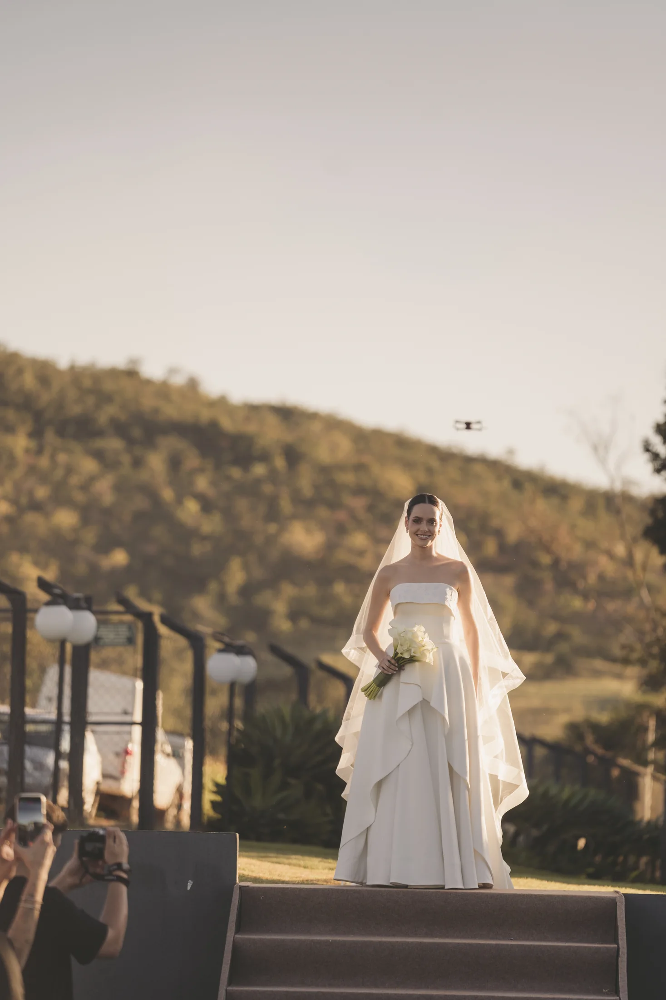

A EXPERIÊNCIA NOIVA
O seu sim,
com leveza.
Uma maquiagem que acompanha a emoção do dia e preserva o que faz de você, você. Da primeira conversa à preparação para a cerimônia.
Conheça a experiência
UM OLHAR PARA A SUA HISTÓRIA
Sentir-se linda.
Sentir-se sua.
Seu vestido, suas referências, o lugar da cerimônia e a maneira como você deseja se sentir. A beleza do casamento nasce dessa conversa e ganha forma com atenção a cada detalhe.
Minha assinatura é minimalista e sofisticada: pele leve, traços valorizados e acabamento pensado para as fotos, os vídeos e, principalmente, para você viver esse encontro com conforto.
A PROPOSTA DE BELEZA
Antes, durante
e no seu sim.
Uma experiência que conecta a descoberta da sua maquiagem ao cuidado no dia do casamento.
- 01
Prévia personalizada
Um encontro no estúdio para experimentar a maquiagem e alinhar o resultado com suas referências.
- 02
Pré-wedding e cerimônia
A proposta de noivas inclui a maquiagem para esses dois momentos da sua história.
- 03
No local da sua preferência
Preparação no hotel, na sua casa, no espaço da cerimônia ou em outro endereço combinado.
- 04
Cuidado com a pele e o acabamento
Produtos de alta performance para uma pele leve, elegante e de longa duração, com atenção às fotos e aos vídeos.
- 05
Suporte na preparação
Presença e auxílio durante a produção, para que cada etapa seja vivida com tranquilidade.
O acompanhamento com retoques durante a cerimônia e até a valsa é um serviço adicional. Converse sobre esse cuidado ao solicitar sua proposta.
O CAMINHO ATÉ O GRANDE DIA
Tempo para ouvir.
Cuidado para revelar.
- 01 / A CONVERSA
Seu casamento,
seu jeito.Conte a data, a cidade e o local de preparação. Compartilhe o que imagina para a sua beleza e receba os detalhes da proposta.
- 02 / A PRÉVIA
Encontrar
o seu olhar.A prévia no estúdio permite conhecer sua maquiagem antes do casamento. É o momento de conversar sobre referências e ajustar os detalhes.
- 03 / O DIA
Estar presente.
Viver o momento.No local combinado, a preparação recebe o mesmo cuidado pensado na prévia, com suporte durante a produção e atenção ao acabamento.

QUEM ESTÁ COM VOCÊ
Beleza para
compartilhar
o momento.
Mães, madrinhas e daminhas também têm espaço nessa história. A maquiagem para quem acompanha você pode ser organizada junto aos detalhes da preparação.
Informe quem deseja se produzir e o local do atendimento. Assim, a conversa considera a noiva e as pessoas que estarão ao seu lado.
Conheça a maquiagem socialCASAMENTOS, EM DETALHES
Belezas que
guardam histórias.
PARA PLANEJAR COM CALMA
Antes do
grande dia.
Algumas respostas para começar a organizar sua experiência.
Como consulto a minha data?
Informe a data do casamento, o horário desejado e o local de preparação pelo formulário ou WhatsApp. A Lívia verifica a disponibilidade e conversa com você sobre a proposta. A solicitação pelo site não reserva nem confirma o horário.
A maquiagem de noiva inclui prévia?
Sim. A proposta inclui uma prévia personalizada no estúdio, em Passos. A referência do portfólio é realizá-la aproximadamente 20 dias antes do casamento; a data é combinada diretamente com a Lívia.
Você atende em outra cidade ou local?
O atendimento de noivas é realizado no local escolhido pela cliente, conforme a proposta. Informe a cidade e o endereço para alinhar o deslocamento e a preparação.
A maquiagem do pré-wedding está incluída?
Sim. O pacote apresentado no portfólio inclui maquiagem para o pré-wedding e para a cerimônia, além da prévia. As datas são organizadas durante a conversa sobre o casamento.
Posso ter acompanhamento e retoques?
Sim, como serviço adicional. O portfólio prevê acompanhamento durante a preparação e a cerimônia, com retoques até o horário da valsa. Peça os detalhes para incluir esse cuidado na proposta.
Como recebo o investimento e as condições?
Envie os detalhes do casamento para receber a proposta atual e as condições de pagamento e reserva. A confirmação da data é feita diretamente com a Lívia.
VAMOS COMEÇAR PELA SUA HISTÓRIA
Como você quer
se sentir?
Conte seus planos para o casamento. A partir daí, vamos conversar sobre uma beleza que faça sentido para você.
Prefiro falar pelo WhatsApp